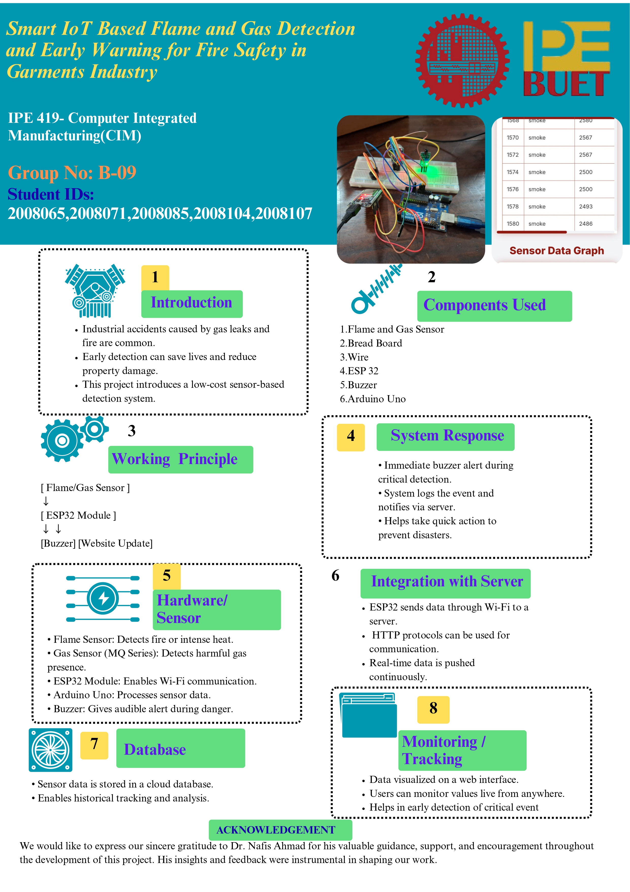

Lack of real-time fire and gas leak detection in industrial kitchens leads to delayed responses and increased risk of accidents. A proactive safety system is essential for preventing such hazards.
| Device / Component | Task / Function |
|---|---|
| MQ-2 Gas Sensor | Detects LPG and smoke (combustible gases) |
| IR Flame Sensor (YG1006/KY-026) | Detects presence of flame (fire) |
| Exhaust Fan (12V DC) | Vents out gas during emergency |
| Buzzer Alarm (5V) | Alerts personnel when hazard detected |
| ESP32 | Main controller, cloud communication |
| 2-Channel Relay Module | Switches exhaust fan & buzzer |

#define SMOKE_SENSOR_PIN A0
#define FLAME_SENSOR_PIN A1 // If you're using a digital pin for flame, use digitalRead()
#define BUZZER_SMOKE 8
#define BUZZER_FLAME 9
// Constants for PPM conversion (approximate for MQ-2)
const float Vcc = 5.0; // Supply voltage
const float RL = 5.0; // Load resistance (in kΩ)
const float Ro = 10.0; // Sensor resistance in clean air (adjust after calibration)
void setup() {
Serial.begin(9600); // Send data to ESP32
pinMode(BUZZER_SMOKE, OUTPUT);
pinMode(BUZZER_FLAME, OUTPUT);
pinMode(FLAME_SENSOR_PIN, INPUT);
pinMode(SMOKE_SENSOR_PIN, INPUT);
}
float adcToPPM(int adcValue) {
float Vout = adcValue * (Vcc / 1023.0); // Convert ADC to voltage
if (Vout <= 0.0) return 0.0;
float Rs = (Vcc - Vout) / Vout * RL; // Sensor resistance
float ratio = Rs / Ro;
if (ratio <= 0) return 0;
// Approximate formula based on MQ-2 datasheet
float ppm = pow(10, (-0.42 * log10(ratio) + 3.54));
return ppm;
}
void loop() {
int smokeADC = analogRead(SMOKE_SENSOR_PIN);
int flameADC = analogRead(FLAME_SENSOR_PIN); // If using digital, use digitalRead()
float smokePPM = adcToPPM(smokeADC);
// --- Buzzer logic ---
if (smokePPM > 7000) {
digitalWrite(BUZZER_SMOKE, HIGH);
} else {
digitalWrite(BUZZER_SMOKE, LOW);
}
if (flameADC > 2000) { // Adjust threshold as needed
digitalWrite(BUZZER_FLAME, HIGH);
} else {
digitalWrite(BUZZER_FLAME, LOW);
}
// --- Send data to ESP32 ---
Serial.print(smokePPM, 2); // Send float with 2 decimal points
Serial.print(",");
Serial.println(flameADC); // Send raw flame sensor value
delay(1000); // 1-second interval
}